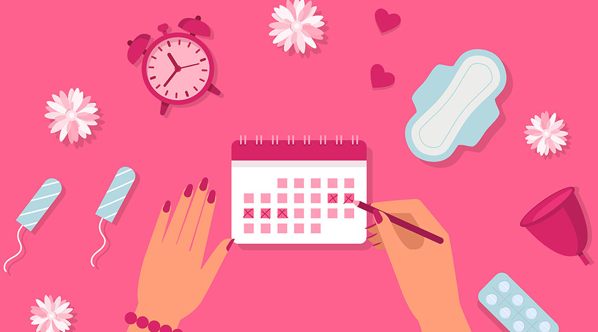

Why we talk about Menstual Cycle?
The menstrual cycle is the hormonal process a woman’s body goes through each month to prepare for a possible pregnancy. Every woman goes through it about every month of their lives since puberty, but this normal experience could get abnormal sometimes. Irregular or heavy, painful periods are considered not normal experiences, and these symptoms could indicate potential health concerns of the woman’s body. M-talk is a community where we talk about these concerns and help each other thrive in the area of menstrual health.

Equity
Women are affected by the menstrual cycle in many ways that people don’t typically think of. Especially for girls in regions around the world with much less access to resources, period can be a really hard time to get through. Due to the lack of resources, some of them do not have safe hygienic products to contain menstrual blood. The use of unsuitable hygiene products has caused serious health issues for girls in those areas. Click Learn More to read more about why we promote menstrual health equity and how you can be part of the movement.
Mental Health Matters
Getting moody when your period is coming? You are not alone! Many women struggle with intense mood swings before and during their period. This is primarily due to the changes in hormone level and sometimes the unpleasant symptoms that accompany the period. It’s okay, emotions are not scary! Read on to learn more about how women’s mental health is affected by the menstrual cycle and what are some healthy ways to cope with “moody days”.